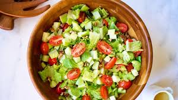

ensalada verde express
ideal para almuerzos ligeros o cenas rápidas. lista en menos de 10 minutos con ingredientes frescos y crocantes.
10 minutos
2 porciones
rápida & económica

ingredientes
- 2 tazas de hojas verdes (espinaca, rúcula, lechuga)
- 1/2 pepino en rodajas finas
- 1/2 palta en cubos
- 2 cucharadas de semillas (chía, girasol, sésamo)
- 1 cucharada de aceite de oliva
- jugo de medio limón
- sal y pimienta a gusto
paso a paso
- 1. lavá y secá las hojas verdes. colocalas en un bowl amplio.
- 2. sumá el pepino y la palta cortados. mezclá con movimientos suaves.
- 3. prepará la vinagreta mezclando aceite, jugo de limón, sal y pimienta.
- 4. verté la vinagreta sobre la ensalada y espolvoreá las semillas antes de servir.